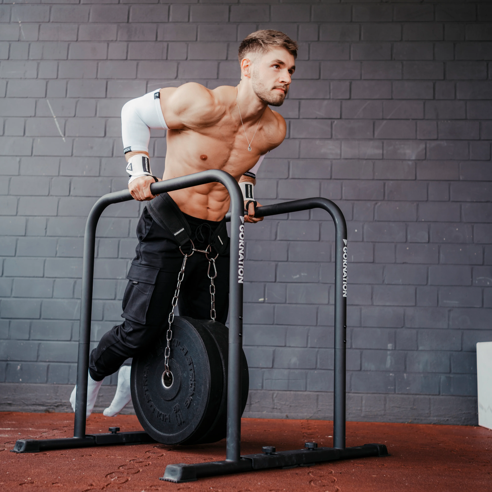
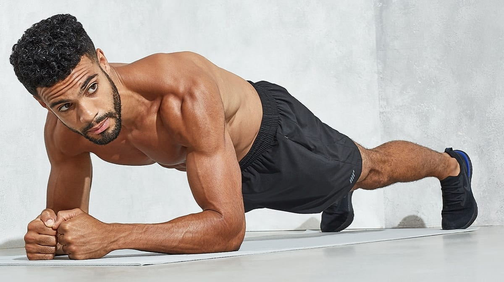
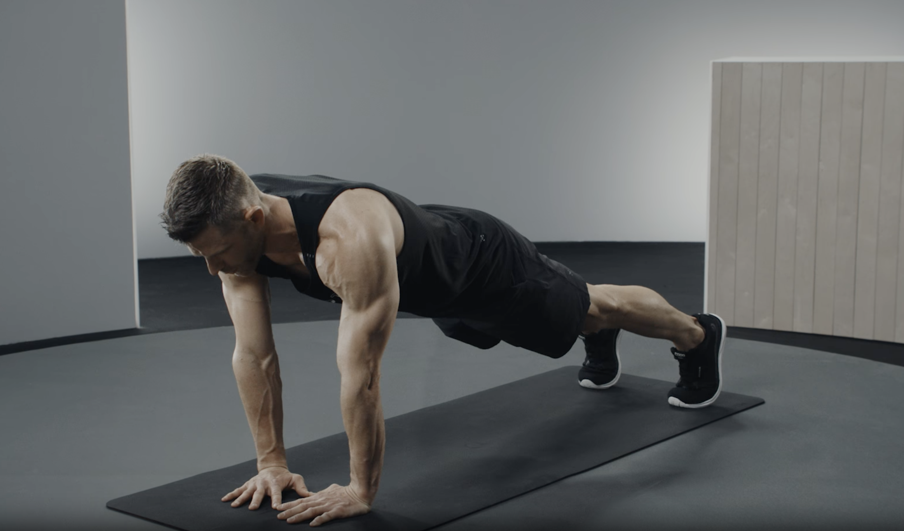

|
  
 |
Programme
Avoir un programme en sport est important parce que ça permet de savoir quoi faire à chaque séance, de progresser régulièrement et d’éviter les blessures.
Cela aide aussi à rester motivé et à atteindre ses objectifs plus efficacement.
Exemple de programme débutant (3x/semaine):
- 3×8– 12 pompes
- 3×5– 8 tractions (ou assistées)
- 3×15 squats
- 3×30– 45 sec gainage
Matériel
- Barre de traction
- Barres parallèles
- Anneaux de gymnastique
- Élastiques
- Ceinture lestée
- Tapis de sol
- Parallettes
- Ceinture de lest
- Roue abdominale
- Corde à sauter
- Magnésie